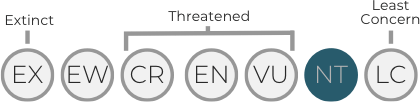
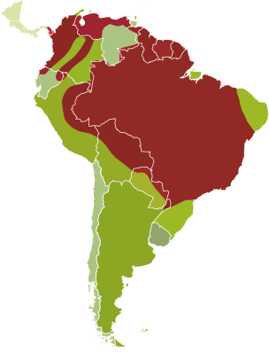
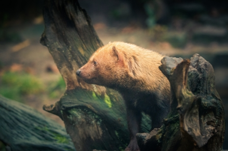
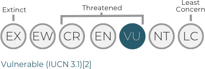
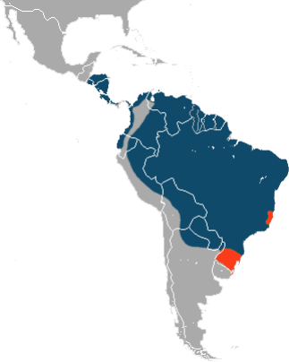

Preventable Extinction
Expand and Protect the Natural Environment with the aim of preventing the extinction of the world’s animal’s species.
“an endangered species is one whose numbers are so small that it is at risk of extinction.”
ABOUT US – NGO Mission Statement
Preventable Extinction is a Non-Government Organization dedicated to Protect and Expand the natural environmental by establishing sustainable conservation programs that will help prevent the disappearance (extinction) of the world’s animal's species.
- Non-Government Organization (NGO) based in Paraguay
- Establishing Sustainable Conservation Programs: Nature Walks www.naturewalksinc.com
- Bush Dog (Speothos venaticus)
- Giant Anteater (Myrmecophaga tridactyle)
- Jaguar (Panthera onca)
- Expand and Protect the Natural Environment
Details on extinction – The Facts
-
52%
World Wildlife Fund report found that 52% of the world’s animals have vanished in 40 years.
-
150%
More than 150 acres of Amazon rainforest is lost every minute of every day.
-
Half
By the year 2100, human activities such as pollution, land clearing, and overfishing may drive more than half of the world’s marine and land species to extinction.
Breeding Programmes
overviewThe bush dog
(Speothos venaticus)
Conservation Status
Near Threatened (IUCN 3.1)[2]
In Brazil it is called cachorro-vinagre ("vinegar dog") or cachorro-do-mato ("bush dog"). In Spanish-speaking countries it is called perro vinagre ("vinegar dog"), zorro vinagre ("vinegar fox"), perro de agua ("water dog"), or perro de monte ("mountain dog").
The Bush dog is near threatened status.
The giant anteater
(Myrmecophaga tridactyla)
Conservation Status


Range: (blue — extant, orange — possibly extinct)
Can be found in multiple habitats, including grassland and rainforest. It forages in open areas and rests in more forested habitats. It feeds primarily on ants and termites, using its fore claws to dig them up and its long, sticky tongue to collect them.
The gieant anteater is getting rarer
Though giant anteaters live in overlapping home ranges, they are mostly solitary except during mother-offspring relationships, aggressive interactions between males, and when mating. Mother anteaters carry their offspring on their backs until weaning them.
The Jaguar (Panthera onca)
Conservation Status
Near Threatened (IUCN 3.1)[1]
Jaguar (Panthera onca) range
- Extant.
- Former extant.
The beautiful Jaguar is at near threatened status
The largest cat species in the Americas and the third-largest after the tiger and the lion. This spotted cat closely resembles the leopard, but is usually larger and sturdier. It ranges across a variety of forested and open terrains, but its preferred habitat is tropical and subtropical moist broadleaf forest, swamps and wooded regions.
The jaguar enjoys swimming and is largely a solitary, opportunistic, stalk-and-ambush predator at the top of the food chain. As a keystone species it plays an important role in stabilizing ecosystems and regulating prey populations.
Non-Government Organization
overviewNon-Government Organization
Non-governmental organizations, nongovernmental[1] organizations, or nongovernment organizations,[2][3] commonly referred to as NGOs,[4] are usually non-profit and sometimes international organizations[5] independent of governments and international governmental organizations (though often funded by governments)[6] that are active in humanitarian, educational, health care, public policy, social, human rights, environmental, and other areas to effect changes according to their objectives.[7][8][9][10] They are thus a subgroup of all organizations founded by citizens, which include clubs and other associations that provide services, benefits, and premises only to members. Sometimes the term is used as a synonym of "civil society organization" to refer to any association founded by citizens,[11] but this is not how the term is normally used in the media or everyday language, as recorded by major dictionaries. The explanation of the term by NGO.org (the non-governmental organizations associated with the United Nations) is ambivalent. It first says an NGO is any non-profit, voluntary citizens' group which is organized on a local, national or international level, but then goes on to restrict the meaning in the sense used by most English speakers and the media: Task-oriented and driven by people with a common interest, NGOs perform a variety of service and humanitarian functions, bring citizen concerns to Governments, advocate and monitor policies and encourage political participation through provision of information.[12]
Our People
biographies-
angus murray
Angus Murray founded Preventable Extinction in 2015 to develop sustainable conservation projects that will protect and expand the natural environment while establishing breeding programs of endangered species. Angus Murray held the position as President of Macquarie Bank USA Inc. before starting his own Fund Management Firm in 1996. www.castlestonemanagement.com Memberships: Flora and Fauna International Conservation Circle, Life Member of the Sierra Club.
-
emilio javier
buongermini palumboEmilio is a Director of a large energy company here in Paraguay, he has previously held many diverse positions relating to the energy and natural resources industry.
Emilio graduated from the University of Asuncion with a Bachelor of Science degree, before further studying Environmental Management & Auditing at the American University in Asuncion.
-
jeronimo finestra
Jeronimo is a former adviser to the Ministry and an advocate for sustainable energy in Paraguay.
He is a practicing Lawyer in Asuncion and also holds a degree in Environmental Law, Environmental Policies and Management.
-
richard braun
Richard has travelled to over 60 countries and believes that interactions with different cultures expands the human horizon both physically and mentally.
Richard studied at the Georgia Southern University where he received a Bachelor’s degree in Business Administration before attending the University of Mississippi for a further 3 years where he was awarded a Doctorate of Jurisprudence. He is City Attorney for the cities of Midway and Gum Branch in his home state of Georgia.
-
sebastián acha
Sebastián is the Executive Director of the Association, Pro Development Paraguay, he is also the Founding Partner of Prama Grupo Consultor which advises the Paraguay Government in Public and Business affairs. He served as a Congress Member, being elected for two consecutive periods, in the lower chamber and is also a lawyer from the National University of Asunción.
Sebastián graduated from the Columbia University of Paraguay where he studied Public Management and Governance.
Sebastián is a forward-thinking person who is responsible for a number recent legislative reforms which aim to improve the daily lives of all Paraguayan citizens.